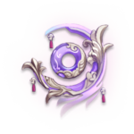

Кокоми

С помощью своей обычной атаки она может выполнять до трех последовательных атак, которые принимают форму плавающих рыб и наносят урон Гидро. Для своей заряженной атаки Кокоми расходует выносливость, чтобы нанести массовый урон в течение короткого времени. Ее пикирующая атака также наносит мощный урон Гидро по ближайшим врагам.
Билд "Поддержка Гидро"
Оружие
Вечное лунное сияние
Увеличивает бонус к исцелению на 10%, и урон от обычной атаки на 1% от максимального запаса здоровья персонажа, использующего это оружие. В течение 12 секунд после использования взрыва стихии, обычные атаки, поражающие противников, восстанавливают 0,6 энергии. Таким образом можно восстанавливать энергию 1 раз каждые 0,1 секунды.
или
Эпос о драконоборцах

При смене персонажа атака увеличивается на 24/30/36/42/48% на 10 секунд. Этот эффект может срабатывать 1 раз в 20 секунд.
Артефакты
Стойкость Миллелита

(2) +20% к здоровью
(4) Когда навык стихий попадает по врагу, атака всех ближайших членов группы увеличивается на 20%, а их сила щита увеличивается на 30% на 3 секунды. Этот эффект может срабатывать 1 раз в 0,5 секунды. Даже если персонажа, использующего этот набор артефактов, нет на поле боя, эффект все равно может сработать.
или
Стойкость Миллелита
(2) +15% к исцелению
(4) Экипированный этим набором артефактов персонаж при лечении соратников создаёт на 3 секунды Пузырь морских красок. Пузырь регистрирует восстановленное при лечении здоровья (в том числе избыточные, когда лечение превышает максимум здоровья). После окончания действия Пузырь взрывается и наносит окружающим врагам урон в размере 90% учтённого объёма лечения (урон рассчитывается так же, как для эффектов Заряжен и Сверхпроводник, но на него не действуют бонусы мастерства стихий, уровня и реакций). Пузырь морских красок можно создавать не чаще, чем раз в 3,5 секунды. Пузырь может записать до 30 000 восстановленных здоровья, в том числе здоровье избыточного лечения. Для отряда не может существовать больше одного Пузыря морских красок одновременно. Этот эффект действует, даже если персонаж, экипированный набором артефактов, не находится на поле боя.
Рекомендуемые характеристики артефактов
Основные

Здоровье%

Здоровье%

Бонус к исцелению
Второстепенные
- 1.Здоровье%
- 2.Восстановление энергии%
- 3.Здоровье